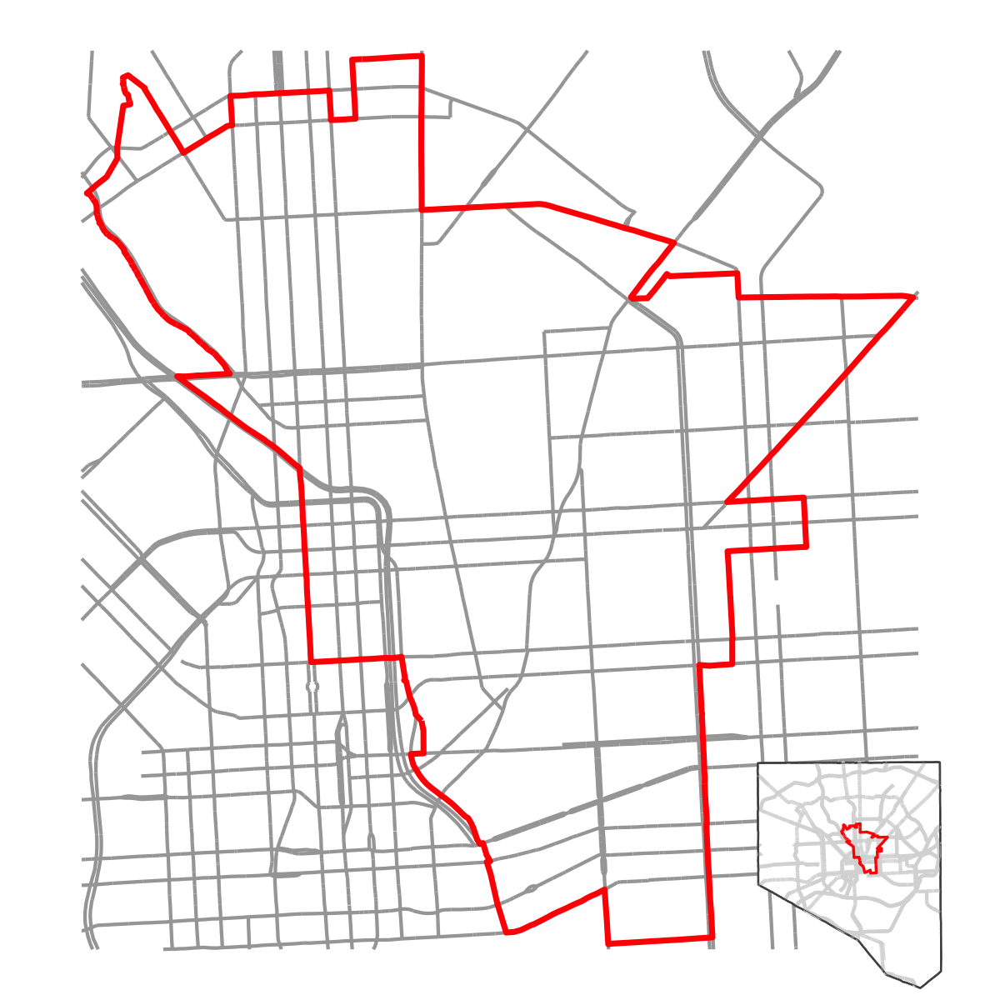
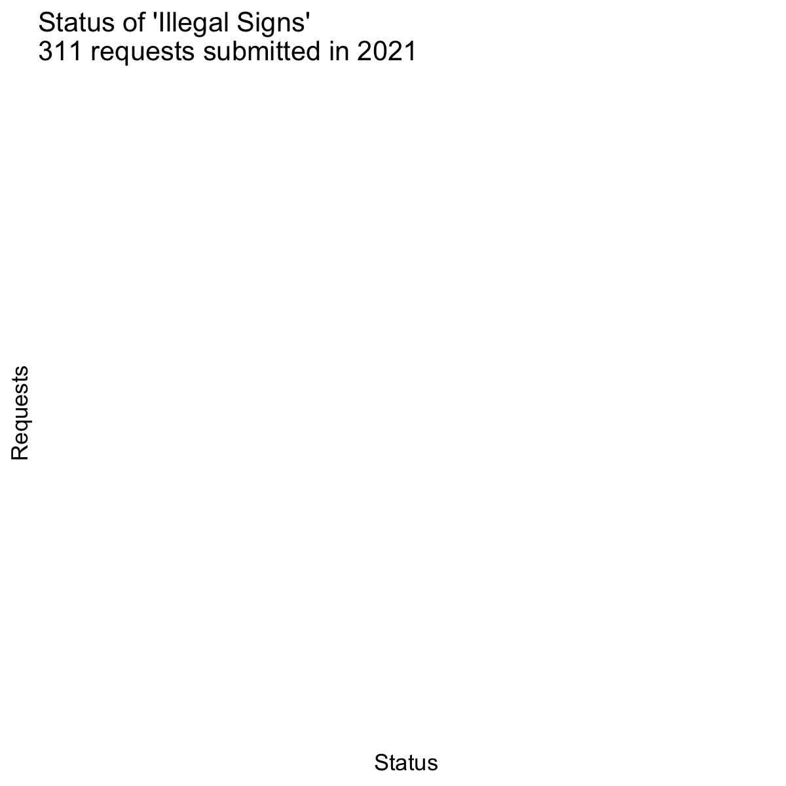
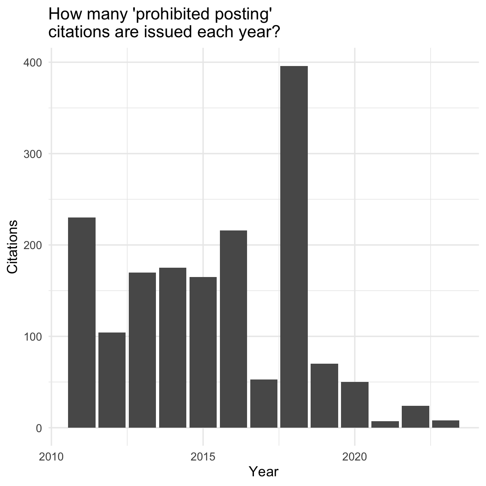
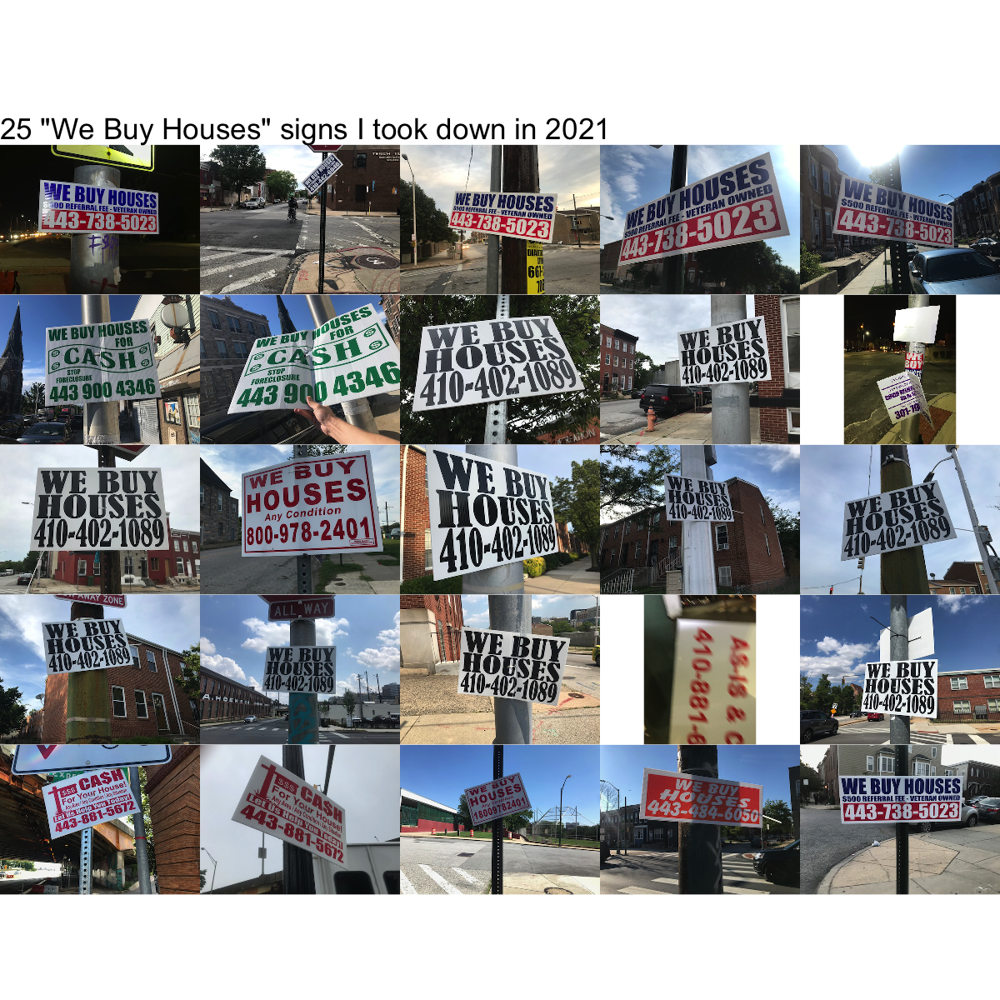

I’ve been taking down illegally posted “We Buy Houses” signs (a.k.a. bandit signs) for several years now. I post about it on Twitter and Instagram using the #banditsigns hashtag and people sometimes ask me why I do it.
Over the past six months, I’ve taken down around 60 illegally posted “We Buy Houses” signs while riding around Baltimore City for work or errands.1 50 of these signs have been located in or near the 12th City Council District where I live.
I thought it might be interesting to try to dig into the data on illegal signs in the district and compare the data to my own observations (while also showing off a few new features for the mapbaltimore package).
I’ll start off by getting the boundaries for the 12th District and making a simple base map:
area_name <-"District 12"area_type <-"council district"area <-get_area(area_type, area_name)area_streets <-layer_area_streets(area = area,dist =25,color ="gray65",sha_class =c("HWY", "INT", "PART", "MART"),linewidth =0.75 )area_boundary <-geom_sf(data = area, fill =NA, color ="red", linewidth =1.25)city_map <-ggplot() +geom_sf(data =buffer_area(baltimore_city, dist =100), fill ="black") +geom_sf(data = baltimore_city, fill ="white", color ="gray35") +layer_area_streets(area = baltimore_city, dist =100, color ="gray85", sha_class =c("HWY", "INT", "PART"), linewidth =0.75) +geom_sf(data = baltimore_city, fill =NA, color ="gray35") +geom_sf(data = area, fill =NA, color ="red", linewidth =0.6) +theme_void()inset_city_map <- patchwork::inset_element(city_map, 0.75, 0, 1, 0.25)area_map <-ggplot() + area_streets + area_boundary +set_map_limits(area = area, dist =50)area_map + inset_city_map

R mapping nerds may also appreciate this example of how to use the patchwork::inset_element() function to overlay a small key map.
Next, I want to look at the distribution of illegally posted signs using data on 311 service requests from Open Baltimore. Anyone can use the 311 website or app to report “illegal signs on public property or public right-of-way.” The city tells users they can expect the city to “investigate and issue a citation to the responsible party if appropriate” within 15 business days.
I also want to look at requests on “Illegal Sign Removal” which is only used “internally” (i.e. users can’t submit a request in this category) and are handled by the Department of Transportation (instead of the Department of Housing and Community Development).
The mapbaltimore::get_area_requests() function makes this easy. The function returns 2021 requests by default. I’m also using purrr::map_dfr() to request multiple types in succession then return a single data frame. I’m also removing duplicate addresses to avoid overplotting.
This quick map shows how the “illegal sign removal” requests are largely used on major streets (e.g. Martin Luther King Boulevard, North Avenue and Charles Street). Reports of illegal signs on public property also look like they are clustered in certain areas. East Baltimore Midway stands out near the northeast corner of the map with a large number of reports. I suspect that this may be the result of a handful of dedicated individuals reporting every illegal sign they can find in their neighborhood.
Unfortunately for those dedicated individuals, over the past year, illegal sign requests don’t seem to go anywhere. Among the 143 service requests for “illegal signs” submitted in 2021, 113 are “open”, 30 are “new”, and none are “closed.”
requests |>filter(agency =="Housing") |>ggplot() +geom_bar(aes(x = sr_status, fill = sr_status)) +labs(y ="Requests",x ="Status",title ="Status of 'Illegal Signs'\n311 requests submitted in 2021" ) +guides(fill ="none") + plot_theme

So, what if the city does investigates an illegal sign report and issues a citation? Unfortunately, the citation data on Open Baltimore for “Prohibited Posting of Signs on Public Property” from is basically useless for mapping.2 This means I can’t look at “prohibited posting” citations just in the 12th District but I can look at citations citywide to answer two basic questions. First, when are citations issued? Second, are citations actually paid?
# The get_area_citations function *should* make this easy.# But it isn't currently working so we need to do this the hard way.# citations <- get_area_citations(description = "PROHIBITED POSTING")# Import the GeoJSON with all 200K+ citationscitations <- sf::read_sf("https://opendata.arcgis.com/datasets/4324ce41e482414eb10e41a20130a6eb_0.geojson")# Filter to "prohibited posting citations" and convert to an sf objectsign_citations <- citations |> janitor::clean_names("snake") |>filter(stringr::str_detect(description, "^PROHIBITED POSTING")) |> tidyr::separate(location, c("lat", "lon"), sep =",") |>mutate(across(where(is.character), ~ stringr::str_trim(.x)),lat = readr::parse_number(lat),lon = readr::parse_number(lon) ) |> sf::st_drop_geometry() |> sf::st_as_sf(coords =c("lon", "lat"),crs =4326 )
sign_citations |>filter(violation_date >= lubridate::ymd("2011-01-01")) |>ggplot() +geom_bar(aes(x = lubridate::year(violation_date))) +labs(x ="Year",y ="Citations",title ="How many 'prohibited posting'\ncitations are issued each year?" ) + plot_theme

After the city issued an unusually large number of “prohibited posting” citations in 2018, they issued just 70 in 2019, 50 in 2020, and only 7 in 2021. Clearly, illegal signs have not been a priority during the pandemic—although the significant drop in citations also includes the prior year.
When you look at citation status, however, you might wonder if it even matters if “prohibited posting” citations are issued or not. Less 5% of all citations in the past decade have been paid. Most of the people who post “We Buy Houses” signs use Google Voice or other VOIP services to make it more difficult to match the signs to a business or address. The signs themselves are cheap (one to two dollars each if you buy a couple hundred at a time) so the risks of getting in trouble are limited.
I’m a big 311 enthusiast but I rarely bother submitting requests for illegally posted signs both because the city can rarely cite anyone and because it can take a long time for the city to come out and take a sign down. So, how do the locations of the signs I’m taking down compare to the locations for “illegal sign” service requests?
Again, the exifr::read_exif() function makes this easy. My post on making a photo key map with R back in March may be helpful for anyone wanting to learn more about this approach.
This may not be a big surprise but this map illustrates how 311 service request data really isn’t representative of the overall scale or distribution of this issue. I take down signs in Oliver and Barclay more often than almost anywhere else and there are almost no illegal sign service requests from either neighborhood. The same goes for McElderry Park located right outside the 12th district on near the southeast corner of the map.
In the end, though, you don’t need perfect data to address this issue. You just need 20 seconds to take down a bandit sign next time you see one. And the next time and the next time—until the scammers stop putting them up.
banditsign_images <- purrr::map( image_locations$SourceFile[1:25],~ magick::image_read(.x) |> magick::image_ggplot() )patchwork::wrap_plots(banditsign_images) + patchwork::plot_annotation(title ='25 "We Buy Houses" signs I took down in 2021')

Footnotes
I have 58 photos since early April and I take photos of almost every sign I take down but occasionally my aging phone battery dies and I miss a few.↩︎
Nearly all “prohibited posting” citations provide incomplete address information (using “0000” as a placeholder for the street address) and an incorrect location (placing the coordinates in Broadway East regardless of the actual violation location). Seriously, there are 1,791 “prohibited posting” citations in this data set and 1,754 are located in Broadway East. I’ve reported this issue to the city staff responsible for Open Baltimore and I’ll be sure to update the post if they can fix the issue.↩︎
![]()